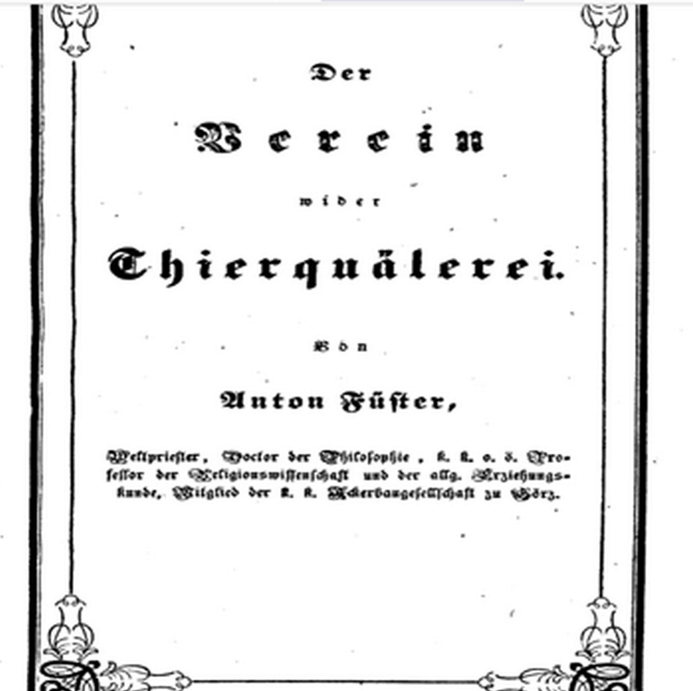

1Da prizadevanja za zaščito živalskega sveta niso novotarija sodobnega sveta, pričajo zgodnje, predvsem pa številne časopisne objave. Delovanje na tem področju se je pospešilo z ustanavljanjem društev proti mučenju živali v prvi polovici 19. stoletja. Takšne akcije tudi v takratnem slovenskem prostoru niso bile majhne. Pričujoči prispevek želi osvetliti, na kakšen način in kako široko so prizadevanja tega prostora odmevala predvsem v časopisih sredine 19. stoletja, in posredno prikazati njegovo vpetost v širši avstrijski oziroma nemško govoreči prostor.
2Ključne besede: zgodovina 19. stoletja, časopisi, varstvo živali, Anton Füster, Valentin Stanič
1The early and especially numerous newspaper publications confirm that animal protection efforts are not merely a modern novelty. Actions in this field intensified with the establishment of societies against animal torture in the first half of the 19th century. At the time, such endeavours, relatively widespread throughout the Monarchy, were also considerable in Slovenia. The present paper aims to shed light on the manner and scope in which the 19th-century press, in particular, reflected the efforts in this area, thus indirectly revealing their significance in the broader Austrian or German-speaking territory.
2Keywords: 19th-century history, newspapers, animal protection
1V naslovu prispevka je ena izmed »Desetih zapovedi«, ki jih je sicer leta 1912 objavil Münchner neueste Nachrichten1 in so poleg zaščite rastlin in živali pozivale k celostnemu pristopu do narave. Med njimi namreč zasledimo tudi zapovedi: Ne kali miru v naravi s hrupom in norčevanjem ali Ne onesnažuj narave z odvrženimi papirji, razbitim steklom, pločevinkami in drugimi odpadki. Z živalmi je povezana tudi osma zapoved, ki prepoveduje zbiranje ptičjih jajc in poziva k njihovi nedotakljivosti v naravnem okolju.
2Zapovedi so, kot zapisano, izvirale iz leta 1912, a je bilo zavedanje o varovanju živali pred pogostim mučenjem živo že več kot sto let pred tem. Torej vsaj nekaj desetletij pred znanimi organiziranimi prizadevanji za varstvo rastlin, ki so se začela v veliki meri pojavljati z ustanavljanjem planinskih društev v drugi polovici 19. stoletja. Prvo društvo za zaščito rastlin je denimo bilo ustanovljeno leta 1883 v Švici, v okviru tamkajšnjega Alpine Club (SAC) z imenom Verein für Pflanzenschutz, ki se je v prvi vrsti zavzemalo za preprečevanje trgovine z redkimi rastlinami.2
1Spremenjeno dojemanje narave, ki ga je prinesla romantika,3 je konec 18. stoletja, še zlasti pa v prvi polovici 19. stoletja posledično izoblikoval tudi drugačen pogled na živali. Petnajst let po znamenitem govoru lorda Thomasa Erskina4 v britanskem parlamentu o človeških grozodejstvih nad živalmi je bilo leta 1824 v Angliji ustanovljeno prvo društvo proti mučenju živali Royal Society for the Prevention of Cruelty to Animals5 ali »Königliche Gesellschaft zur Verhütung der Grausamkeit gegen Thiere unter dem besonderen Schutze Ihrer Majestät der Königin«,6 kot ga je v svojem delu imenoval znameniti dunajski revolucionar iz leta 1848 Radovljičan Anton Füster.7
2Prvo društvo proti mučenju živali Tierschutz-Verein na nemških tleh je nastalo leta 1837 v Nürnbergu, pri čemer sta imela pomembno vlogo pridigar Christian Adam Dann8 in himnoslovec Albert Knapp.9 Leta 1839 je bilo ustanovljeno društvo v Dresdnu in leta 1842 v Münchnu.10 Zadnje je bilo za nadaljnji razvoj v avstrijskem prostoru precej pomembno, saj so se na njegovo pobudo začela ustanavljati društva v takratni Avstriji. Prvo na njenih tleh je z imenom Görzer Verein gegen Thierquälerei nastalo v Gorici, nato v Pešti, Linzu in Salzburgu11 ter leta 1862 v Gradcu.12 Glavno vlogo pri ustanovitvi goriškega društva je imel pesnik, alpinist in duhovnik Valentin Stanič.13 Že leta 1845 se je priključil Društvu zoper trpinčenje živali v Münchnu in 14. februarja 1846 sam ustanovil podobno društvo v Gorici, za katero je tudi sestavil in izdal statut.14 Za reklamo in vabilo v društvo je napisal Kurzer Bericht über den görzer Verein wider die Thierquälerei und Einladung zum gefälligen ferneren Beitritte.15 V ta namen je iz nemščine prevedel Kratke povesti s podobami, v katerih nastopa proti surovosti in neusmiljenosti do živali. Goriško društvo ni bilo le prvo v avstrijskem prostoru, pozornost je zbudilo celo v Franciji in Nemčiji.16
3Živinovarstveniki so si v okviru društev prizadevali za spremembe razmer vprežne živine, prevoza klavne živine, načina zakola in odpravo mučenja živali za človekovo zabavo (oslepitve ptic pevk, petelinjih bojev) ter nepotrebnih bolečih operacij na domači živini, ki so imele podlago v praznoverju. Da bi s tem bilo seznanjeno čim večje število ljudi, so društveniki uporabljali tudi javna občila, italijanska in domača, denimo Illyrisches Blatt.17
4Slab mesec po ustanovitvi goriškega je nato v začetku marca leta 1846 tudi na Dunaju nastalo društvo proti mučenju živali,18 ki je od leta 1853 dalje izdajalo časopis Tierfreund.19 Soustanovitelj in predsednik je bil Ignaz Franz Castelli,20 dramatik, pesnik in nasploh precejšen aktivist v takratnem avstrijskem in nemškem prostoru. V njem je poleg znatne angažiranosti na področju zaščite živali deloval kot pisec ter izdajatelj in sodelavec različne periodike. Povezan pa je bil tudi s takratnim slovenskim prostorom, saj je bil častni član Filharmoničnega društva za Kranjsko.21 Leta 1876 je društvo odprlo svojo pisarno v središču Dunaja. Številni člani, iz višjih plemiških krogov in izobraženega kmečkega stanu, so društvu ponudili »ugledno količino blaga« v dobrodelne namene. Zahvala za to gre vodstvu, še zlasti predsedniku društva Matthäusu Elsingerju.22 Bil je član dunajske gospodarske zbornice,23 leta 1887 pa ga najdemo tudi v seznamu članov dunajskega ornitološkega društva.24 Za svoje široko udejstvovanje je prejel viteški križec reda Franca Jožefa ter t. i. Salvator Medaille, priznanje mesta zaslužnim Dunajčanom.25
5Kot vidimo, so bili vodilni v društvih proti mučenju živali precej družbeno angažirani, če v tem kontekstu izpostavimo samo dejavnost predsednika goriškega društva in dunajskih predsednikov. Njihova široka aktivnost ni obsegala zgolj pasivnega članstva v številnih društvih, ampak konkretne akcije in angažmaje, ki so rezultirali v različnih poljih javnega življenja.
6Na Kranjskem so se prizadevanja proti mučenju in za zaščito živali začela že v štiridesetih letih 19. stoletja, a je bilo društvo za varstvo živali ustanovljeno šele v začetku 20. stoletja.26 Leta 1846 je Kranjska kmetijska družba izdala delo duhovnika Mihaela Stojana,27 ki ga je tiskal Jožef Blaznik in je izhajalo kot brezplačna doklada Novic že od začetka aprila 1846 dalje.28 Miloserčnost do živali s podnaslovom Poduk za mlade in stare ljudi29 je že v predgovoru jasno nakazovala svoj namen: »Živinica je božja stvar, je božji dar. Kdor jo brez potrebe pokončuje, gerdo ž njo ravna in jo terpinči ali muči, je sovražnik božjiga dela.« Živino človek močno potrebuje in je dostikrat največje kmetovo bogastvo. »Tega pa ne spoznajo vsi ljudje, kakor bi imeli biti, in se s terpinčenjem živali pregrešijo zoper božjo zapoved in zoper lastni prid.« Delo je ljudem želelo odpreti oči in jih »k lepimu zaderžanju do živali nepeljevati«.30 Gre za 70 strani debelo knjižico, ki ji po uvodu sledi prvi del z jasnim naslovom »Od čudežev bošjih pri stvarjenji in ohranjenji žival in od njih koristnosti človeka«. V tem delu je opis živali, ki so nastale po božjem stvarjenju petega in šestega dne. Drugi del, »Od napačnosti, hudobije in škodljivih nasledkov terpinčena žival«, se ukvarja z razlogi za to početje in zagovarja, da slabo ravnanje z živino pomeni tudi slab odnos do sočloveka. V tretjem delu pa piše o društvu proti mučenju živali v Münchnu in o prvem na avstrijskih tleh v Gorici ter o njuni koristnosti.
7Stojanova knjiga je odmevala predvsem v Bleiweisovih Novicah, ki so med drugim zapisale, da je namen » teh bukvic stare in mlade ljudi podučiti miliga zaderžanja do živine in jim prav globoko v serce vtisniti napčnost neusmiljeniga ravnanja.« Zaznamka o njej pa po pričakovanju ne najdemo v aprilskih številkah Laibacher Zeitunga leta 1846, ki je oglaševal knjige drugih ljubljanskih tiskarjev.31
8Nadaljnja prizadevanja za zaščito živali so na Kranjskem do ustanovitve društva z uradnim imenom Kranjsko društvo za varstvo živalij pripeljala šele 23. oktobra 1902.32 Njegov osnovni namen je bilo varovanje živali pred trpljenjem in mučenjem, hkrati pa je javnost želelo osveščati o pravilnem ravnanju z živalmi. Cilje društva so podobno kot v goriškem društvu poskušali doseči z vzgojo zlasti mladih. Pri njih naj bi z dobrimi vzgledi vzbudili ljubezen, usmiljenje in empatijo do živali. Ideje, da humano ravnanje z živalmi odraža človekov pravi značaj, so želeli razširiti tudi z izdajanjem poučne literature.33
9Prizadevanja za skrbno ravnanje z živalmi so bila znana tudi v štajerskem delu takratnega slovenskega prostora. Neki mariborski »penzionist« in ljubitelj živali je v osrednjem Marburger Zeitungu v odzivu na objavljeni prispevek v zvezi z mučenjem vlečnih živali ta problem razširil na živali, s katerimi se človek hrani. Poudaril je pogosta trpinčenja domačih živali, kot je pretepanje s koli, in druge oblike zlorab. »Človek se pred slabim ravnanjem zavaruje s svojo pravico, brezpravna žival pa je po Odrešenikovem zgledu popolnoma odvisna od zaščite dobrih ljudi.« Avtor je apeliral tako na policijo kot na sočutne someščane, naj vendarle pripomorejo k ustanovitvi le enega močnega društva za zaščito živali, ki se bo polnomočno borilo poti trpinčenju.34
10Seveda je tudi država s pravnimi akti začela skrbeti za živali, če omenimo zgolj Postavo o nekaterih naredbah za povzdige ribarstva po suhozemeljskih vodah iz leta 188035 ter Zakon o prepovedanem lovskem času iz leta 1889.36 Lov, še zlasti divji, je kar pogosto polnil strani tiska v obravnavanem času. Takšnih objav in nasploh zapisov v zvezi z živalmi ali naravo ne najdemo samo v časopisih, ki so že v svojem osnovnem poslanstvu bili namenjeni naravi. Na Kranjskem je bil od leta 1895 to zagotovo Planinski vestnik, ki je že v zgodnjih številkah konkretno pozival k obzirnemu ravnanju z naravo. Turiste, torej takratne gorohodce, je pozival k upoštevanju njihovih dolžnosti, ki vključujejo primerno ravnanje z naravo.37
11Tudi v povsem »običajnih« dnevnikih, torej nestrokovnih časopisih, so se zlasti na prelomu stoletja in v prvih desetletjih 20. stoletja vrstili pozivi k varovanju živali, tudi s precej sodobnimi naslovi. Neki S. je tako v prispevku Naturschutz poleg odnosa do celotne narave posebej poudaril skrb za živali.38 Motile so ga nevzdržne razmere, v katerih prebivajo žabe, kače ali kuščarji, ki jih otroci (in tudi odrasli) na sprehodih v naravi ujamejo in prinesejo domov. Tam kmalu umrejo ali precej trpijo, saj živijo v izrazito neprimernih okoliščinah. Naloga oblasti naj bi po njegovem zato morala »omejiti tovrstne športne dejavnosti«. Rešitev problema je videl v sodelovanju s šolskimi oblastmi, ki naj bi skupaj z društvi za zaščito narave poskrbele za ozaveščanje in konkretne akcije. Po njegovem bi povsem zadostovali v vsaki šoli postavljeni akvariji in terariji, ki bi jih bilo mogoče obiskovati.
12Tem pozivom se je v takratnem slovenskem prostoru pridružil tudi Laibacher Zeitung,39 denimo v članku z zgovornim naslovom Schutz der Alpen!40 Pozitiven odnos do živali so poleg naslovov odražala tudi imena časopisov, kot je bil denimo Časopis Brencelj v lažnivi obleki Jakoba Alešovca. Šlo je za slovensko naravnan politični časopis, ki je izhajal dvakrat mesečno od leta 1869 dalje. Ob takšnih naslovih velja omeniti še dela na Goriškem delujočega profesorja, tudi prirodoslovca in potopisca, Frana Erjavca, ki si je s povestmi, še bolj pa s slikami iz narave, potopisi in klasično prozo v slovenskem slovstvu pridobil odlično mesto.41 Njegova tankočutna opazovanja narave in živali in njegov dar za jezik so prišli do izraza v številnih zapisih, v katerih nastopajo različne živalske vrste. Erjavčeve zgodbe so objavljali razni časopisi, na primer Slovenski glasnik leta 1863 poučni spis o žabi42 ali Slovenski koledar za leto 1858 prirodoslovni spis Mravlja,43 ki je takoj zbudil občo pozornost in še danes krasi naše čitanke.44
1Preden pogledamo, kako je mučenje živali odmevalo v časopisih sredi 19. stoletja, naj omenim, da so časopisi prve polovice 19. stoletja to problematiko pogosteje naslavljali s »trpinčenjem živali« (Thierquälerei), v objavah od druge polovice 19. stoletja dalje pa se je poleg omenjenega izraza vse pogosteje pojavljal tudi izraz »zaščita živali« (Tierschutz).
2Že do leta 1846 opazimo precej barvit spekter časopisov z zapisi o tej problematiki. Med drugim lahko o »Anti-Thierquälerei Verein« beremo v humorističnem dunajskem časopisu Humorist45 izpod peresa njegovega urednika. O izvoru trpinčenja živali se sprašuje neki »človekov prijatelj« v časopisu Österreichisches Bürgerblatt für Verstand, Herz und gute Laune.46 Članek izpod peresa Münchenskega društva proti mučenju živali o zlorabi živali nasploh in še posebno v kuhinji sta objavila časopisa Der Bote von Tyrol47 in Carinthia48. V času pred letom 1846 pa o tej problematiki beremo zapise med drugim še v Laibacher Wochenblatt zum Nutzen und Vergnügen,49 Der Aufmerksame,50 Didaskalia oder Blätter für Geist, Gemüth und Publizität51 in tudi v Wiener Zeitschrift für Kunst, Literatur, Theater und Mode.52 Kot vidimo, je paleta časopisov precej pisana, saj v njej najdemo dnevne, humoristične časopise in tudi liste, ki naj se na prvi pogled s to problematiko ne bi ukvarjali. Pri tem mislim na dunajski časopis za umetnost, literaturo in modo. Očitno so se posamezniki že zavedali, da je bilo precej živali ubitih prav zaradi mode.
1Dosedanji pregled tiska je bil z letom 1846 omejen iz dveh razlogov. V istem letu je poleg že omenjenega Stojanovega dela bilo izdano še eno delo, katerega avtor je že omenjeni, v tistem času na Goriškem delujoči Anton Füster. Na tem koncu takratnega slovenskega območja je bilo torej kar nekaj akterjev, ki so s svojim delovanjem želeli razširiti spoštljivejši odnos do živali. V letu Staničeve smrti je prav v okviru njegovega društva bilo izdano delo, ki je sredi 19. stoletja kar široko odmevalo v takratnem tisku po monarhiji. Dejstva o Staničevem delovanju v goriškem društvu za zaščito živali so že znana,53 verjetno pa je manj znano, da je bil v društvu prav tako precej znan že omenjeni Radovljičan, tudi politik, filozof, duhovnik in šolnik Anton Füster. Najbrž je slednji tudi manj poznan kot avtor dela Der Verein wider Thierquelerei, ki je bilo leta 1846 v okviru goriškega društva proti mučenju živali natisnjeno v tiskarni dunajskih mehitaristov.54 Naslovnico knjige je krasil Füstrov sloves »svetovnega duhovnika, dr. filozofije, profesorja verskih znanosti, profesorja na goriški šoli in člana c. kr. kmetijske družbe Goriške, ki je v šestdesetih letih izdajala svoj list. 28. maja 1863 so se namreč na zboru društva odločili, da se Umni gospodar »za zdaj enkrat na mesec izdaje, in od začetka ne le družbinim udom, temuč tudi drugim z a s t o n j (sic!) pošilja«.55
2Knjižica, ki obsega 57 strani, je skoraj v celoti namenjena utemeljevanju razlogov za ustanavljanje takih društev. Avtorju so bili pomembni z ekonomskega in moralnega vidika. Prvega je lahko močno okrepilo primerno ravnanje z živalmi; važnejši pa mu je bil drugi vidik, saj je članstvo v takem društvu lahko močno pripomoglo ne le k zmanjšanju človeške surovosti do živali, ampak se je posredno to lahko odražalo tudi v povečanem sočutju in empatiji do sočloveka.56

3Füstrovo delo leta 1846 ni bilo zgolj navedeno v Allgemeines Repertorium der neuesten in- und ausländischen Literatur,57 pregled časopisov iz let 1846 in 1847 daje vtis, da je bilo Goriško društvo proti mučenju živali predmet pisanja številnih časopisov tudi ali morda prav zaradi Füstrovega dela. Gotovo je to tudi zasluga profesorja dr. Edwarda F. Schwaba, ki je sicer članke z literarnega področja objavljal v strokovnih nemških časopisih, kot je Österreichische Blätter für Literatur und Kunst.58 Omenjeni goriški profesor je različne časopise – poleg informacij o delovanju goriškega društva – po pravilu obveščal tudi o Füstrovi knjigi. Tako je konec marca leta 1846 v Wiener Zeitung izšel sicer nepodpisan dopis (morda prav Schwabov) o nastanku omenjenega društva.59 V njem je med drugim podatek o potrditvi društva in njegovega prvega predsednika Valentina Stanič s cesarjevim dekretom 26 junija 1845. V nadaljevanju izvemo, da je v času objave zapisa društvo imelo okoli 800 članov iz različnih družbenih slojev in z različnih območij, tudi iz Trsta in Kranjske. Kot je še zapisano, je društvo že od vsega začetka bilo precej aktivno, saj je ponatisnilo precejšnje število v slovenščino in italijanščino prevedenih nemških besedil na to temo. Ob tem je bila še posebej poudarjena koristnost Füstrovega dela.60 Dobra dva tedna pozneje je v istem časopisu izšel stran in pol dolg zapis o društvu iz Gorice.61 Podpisani Schwab je ob že znanih dejstvih o ustanovitvi društva navedel določila iz njegovega statuta. Prva naloga društva je delovanje v duhu humanosti: v največji mogoči meri preprečiti vsako dejanje, s katerim se živalim povzroča trpljenje v nasprotju z razumom in brez namena. Ker sočutje do živali zmanjšuje sočutje ljudi do drugih, je namen združenja – spodbujanje človečnosti oziroma humanosti – samoumeven. Statut določa, da se vsak član zavezuje, da ne bo povzročal nepotrebnega trpljenja nobeni živali, temveč da bo to po svojih najboljših močeh preprečeval tudi drugim. Izpostavljena je bila obveza, da bo proti družinskim članom in služabnikom uporabljal očetovski ugled. Avtor v nadaljevanju nasprotuje očitkom uradnih oblasti, češ da društvo v svojih akcijah proti mučenju živali ni bilo dovolj uspešno, saj je v tamkajšnjem prostoru opaziti nezmanjšano število izgredov.62
4Füstrovo delo so že kmalu oglaševali številni časopisi po monarhiji zlasti onkraj Karavank, saj lahko objave spremljamo vse tja do Dunaja, kar dokazuje oktobrski oglas v Wiener Zeitungu že v letu izdaje knjige.63
5Delovanje goriškega društva je precej odmevalo spomladi leta 1847 na Salzburškem. V začetku aprila je osrednji Salzburger Zeitung objavil kratko poročilo o prvem generalnem zasedanju društva konec februarja. Besedilo v nadaljevanju močno spominja na članek, objavljen na Dunaju konec marca z malenkost drugačnim naslovom.64 Dober teden pozneje je isti salzburški časopis objavil še daljše besedilo, v katerem je uvodoma bila ponovno omenjena ustanovitev društva v Gorici, sledila pa je precej podrobna analizira Füstrovega dela.65 Našteta so bila poglavja in zapisano mnenje, da je za goriško združenje zagotovo nesporna čast, »da je s pomočjo besed dr. Fistra dobilo priložnost, da izrazi in razširi stališča o krutosti do živali na način in v obliki, ki zlahka prepričuje«. Po besedah neimenovanega avtorja je Füster pri pisanju imel pred očmi točno določeno ciljno publiko, saj naj bi v vsebino in obliko tematike vnesel »prefinjeno obarvanost, enako privlačno in zadovoljivo za um in duha izobražencev«.66 Isti časopis je nekaj mesecev pozneje objavil poročilo o drugem zasedanju Zgornjeavstrijskega društva proti mučenju živali (Verein gegen Thierquälerei in dem Erzherzogthume Österreich ob der Enns und in dem Herzogtume Salzburg), na katerem so med drugim razdelili izvode »cenjene« Füstrove knjige. Zapisano je, da je bilo delo dobro sprejeto, kar »dokazujejo številna naročila za več tisoč izvodov, za katere so plemenito misleči prijatelji prostovoljno položili znatne prispevke na oltar humanosti«.67
6Linzer Zeitung je spomladi leta 1846 najprej objavil krajše poročilo o ustanovitvi goriškega društva, v zvezi s Füstrove knjigo pa le to, da »naj bi bila že v tisku«.68 Dobra dva tedna pozneje je isti list objavil eno stran dolg dopis neimenovanega avtorja o Münchenskem društvu proti mučenju živali. Besedilo med drugim govori tudi o društvu iz »majhne« goriške dioceze, ki naj bi imela že 600 članov iz širše regije. Omenja delo tamkajšnjega učitelja Füstra, ki naj bi bilo prevedeno tudi v italijanski in slovenski jezik..69 Taisti list je jeseni istega leta nato večkrat objavil poziv omenjenega avstrijskega društva proti mučenju živali vsem, ki dvomijo o smiselnosti takšnih društev, priporočil, naj pri lokalnem knjigarnarju kupijo Füstrovo knjigo. Po mnenju predsedstva avstrijskega društva je Füstrovo delo odlično in v vseh pogledih ustreza ustanovnim ciljem tamkajšnjega društva.70
7Omenjeni naslovi časopisov na eni strani izpričujejo pomembnost društva v Gorici, na drugi pa med vrsticami tudi vpetost takratnega slovenskega prostora v širok nemško govoreči prostor, ki je segal daleč onkraj Karavank.
8Füstrovo delo je odmevalo tudi v takratnem osrednjem slovenskem prostoru. Vereinigte Laibacher Zeitung je sredi aprila 1846 v rubriki Razno (Verschiedenes) objavil novico iz Gorice, ki je bila v celoti namenjena tamkajšnjemu društvu proti mučenju živali in novici o tem delu,71 sicer pa besedilo spominja na že omenjeno objavo iz Wiener Zeitunga slab mesec pred tem.72 V Ljubljani je med nemškimi časopisi o delovanju goriškega društva pisal še Laibacher Wochenblatt zum Nutzen und Vergnügen. V več nadaljevanjih je objavil precej natančno poročilo o začetkih in delovanju tega društva, pri čemer tudi Füstrovega prispevka ni pozabil omeniti.73
9Odmeve društva je najti tudi v slovenskih Novicah, ki so ustanovitev društva z veliko naklonjenostjo naznanile v začetku marca 1847. »Namen te hvale vredne družbe je sploh: človeške serca mečiti, de imajo usmiljenje z ubogo živino, ki je od Stvarnika človeku v prid, pa ne v terpinčenje ali mučenje ustvarjenja.« Društvo je, kot piše v nadaljevanju, našlo podpornike na Tržaškem, Koroškem, Štajerskem in Kranjskem. Po pisanju neimenovanega avtorja društvo iz podpornega denarja tiska »podučivne bukvice«, ki se po deželi delijo brezplačno.74
10Almanah Drobtinice75 se je prav tako postavil v bran živali in objavljal poučne zapise na to temo. Tako lahko beremo zgodbo o nekem »neusmilnežu«, ki je žival »strašno pretepal inu bil«. Opozorilom o surovosti in nespametnem ravnanju, ki da bosta tudi njega nekoč pripeljala v stisko, ko bo potreboval milost, se je »neusmilnež« le posmehoval. Po nekaj letih se je napoved uresničila, saj je kljub prošnjam po usmiljenju in pomoči povsod naletel na gluha ušesa in zavračanje.76 Zgodba je torej poučna, a hkrati tudi svarilo pred kaznijo, ki je posledica neprimernega ravnanja z živalmi. V istem zvezku so bralci poleg omenjene zgodbe lahko prebrali kar nekaj basni o divjih in domačih živalih.77
11V naslednjem zvezku Drobtinic leta 1848 je bilo v okviru Slomškovega prispevka o pokojnem Staniču zapisanih kar nekaj vrstic o pokojnikovem angažmaju na področju varstva živali.78 Stanič je po Slomškovih besedah ljudi želel obvarovati pred trojnim grehom. Človek se pregreši, če »živino v nemar pusti«, kadar jo pretepa ali »ako njo omehkuži in preopase, kakor nektire gospé svoje cuceke, de same masti sopihajo«.79 Poleg omenjenega zapisa so bili v zvezku natisnjeni še drugi, ki so bralce med vrsticami nagovarjali k humanejšemu ravnanju z živalmi.80
1V luči sodobnega dogajanja, katerega smisel je zlasti povezan s tehnološkim napredkom oziroma umetno inteligenco, je vse pogosteje zaznati pozive, če že ne kar zahteve po ohranitvi narave. Vendar pomembnost zavarovanja biotopa skupaj z njegovimi prebivalci ni novotarija sodobnega sveta. Dokaz za to so ne le številna društva proti mučenju živali iz srede 19. stoletja, marveč tudi številne objave iz pisanega spektra časopisov tistega časa. Branje teh več kot sto let starih zapisov vsebinsko pogosto asociira na sodobne članke s podobno vsebino. Besedila bi namreč ob manjših stilističnih in morfoloških popravkih prav lahko ponatiskovali novodobni časopisi.
2Ob preteklih pozivih o zaščiti živali gre poudariti še humanost, saj so se zavedali, da dober odnos do živali posredno pomeni tudi dober odnos do človeka. To je prišlo do izraza ob ustanavljanju prvih društev proti mučenju živali v prvi polovici 19. stoletja, ki so nastala desetletja prej kot društva za zaščito rastlin. Vsa omenjena prizadevanja lepo zrcali pisana paleta takratnega tiska, saj je objave na to temo mogoče zaslediti v časopisih precej različnih naslovov.
3Iz takratnega slovenskega prostora je v periodiki sredi 19. stoletja najti številne prispevke zlasti zaradi delovanja Goriškega društva proti mučenju živali, ki je bilo prvo na avstrijskih tleh. Za močno dejavnost na področju zaščite živali in sloves društva ni bil zaslužen le njegov ustanovitelj, alpinist in duhovnik Valentin Stanič. K temu je močno pripomoglo delo Antona Füstra Der Verein wider Thierquälerei, ki je tako kot društvo široko odmevalo v tisku precej daleč onkraj Karavank. Morda bi lahko celo trdili, da je bilo prav zaradi izdaje omenjene knjige teh prispevkov še več.
4Pregledani časopisi 19. stoletja kažejo na eni strani zelo zgodnje in široko zavedanje o problematiki mučenja živali, na drugi strani pa vpetost takratnega slovenskega območja v širši avstrijski oziroma nemško govoreči prostor. Dogajanje v slovenskem prostoru torej nikakor ni bilo hermetično ali celo širše nepoznano. Prej nasprotno.
Marija Mojca Peternel
1Considering the contemporary developments, whose implications are associated especially with technological progress or artificial intelligence, we are witnessing increasingly frequent calls, if not demands, for the preservation of nature. However, the importance of protecting the biotope and its inhabitants is more than merely a modern novelty. This is evidenced not only by the founding of societies against animal torture in the early 19th century but also by the numerous publications in the rather extensive contemporaneous press. Examining the records dating back more than a hundred years often brings contemporary articles of this kind to mind. Indeed, with minor stylistic and morphological corrections, the texts could easily be reproduced in modern newspapers.
2In addition to the historical calls for animal protection, it is worth mentioning the humane approach itself, as it became apparent that a good attitude towards animals indirectly implied a good attitude towards humans. This was reflected in the establishment of the first societies against animal cruelty in the first half of the 19th century, which predated the plant protection societies by decades. All these efforts are well reflected in the diverse contemporaneous press, as publications on the subject can be found in a great variety of newspapers.
3In Slovenia, many articles were published in the periodicals of the time, particularly due to the activities of the Gorizia Society Against Animal Torture, which was the first such organisation in the Austrian territory. Its founder, the mountaineer and priest Valentin Stanič, was not the only reason for this Society’s significant animal protection activities and reputation. Anton Füster’s work Der Verein wider Thierquelerei, which, like the Society, was widely publicised in the press well beyond the Karavanke Mountains, was a major contributing factor. It could even be argued that the publication of this book represented the foundations for further contributions.
4The analysis of the relevant 19th-century newspapers attests to a very early and widespread awareness of the animal torture problem, as well as reveals that, at the time, the Slovenian territory was highly involved in and connected to the parts well beyond the Karavanke Mountains.
* »Zehn Gebote zum Naturschutz,« Münchener Neueste Nachrichten: volkswirtschaftliche, alpine und Sportzeitung, 25. 9. 1912, nepaginirano. Münchner neueste Nachrichten je izhajal od leta 1887 do 1945 v založbi Knorr Knorr & Hirth. Katalog für die Bibliotheken der Universitäten Heildelberg, https://katalog.ub.uni-heidelberg.de/cgi-bin/titel.cgi?katkey=1278999, pridobljeno 12. 12. 2022.
** Dr., docentka, Oddelek za germanistiko z nederlanistiko in skandinavistiko, Filozofska fakulteta, Aškerčeva 2, SI–1000 Ljubljana; mojca.peternel@guest.arnes.si
1. »Zehn Gebote zum Naturschutz,« Münchener Neueste Nachrichten: volkswirtschaftliche, alpine und Sportzeitung, 25. 9. 1912, nepaginirano.
2. Reinhard Falter, »Apotheker, Dr. phil. H. c. Carl Schmolz (1859–1928),« Blätter zur bayerischen Naturschutzgeschichte. (München: Bayerische Akademie für Naturschutz und Landschaftspfleg, 2008), nepaginirano.
3. Janez Mlinar, »V senci gora. Oblikovanje Zgornjesavske doline kot turistične destinacije,« v: Triglav 240 (Ljubljana: Založba ZRC, 2018), 180, 181.
4. Thomas Erskine, 1. Baron Erskine (*10. 1. 1750 Edinburgh; †17. 11. 1823 Almondell, West Lothian), britanski politik škotskega rodu. – Allen A. Francis, »Thomas Erskine, 1. Baron Erskine,« v: Meyers Konversations-Lexikon (Leipzig in Wien: Verlag des Bibliographischen Instituts, 1885–1892), 819, 820.
5. Royal Society for the Prevention of Cruelty to Animals, https://www.rspca.org.uk/whatwedo/whoweare/history, pridobljeno 6. 8. 2022.
6. Anton Füster, Der Verein wider Thierquälerei (Wien: gedruckt bei den P. P. Mechitharisten, 1846), 43.
7. Anton Füster (*5. 1. 1808, Radovljica; †12. 3. 1881, Dunaj), duhovnik, politik, filozof, šolnik. – Füster, Anton (1808–1881) – Slovenska biografija, https://www.slovenska-biografija.si/oseba/sbi193714/, pridobljeno 6. 8. 2022.
8. Christian Adam Dann (*1758; †19. 3. 1837, Stutgart) duhovnik, pridigar. – Christian Palmer, »Dann, Christian Adam,« v: Allgemeine Deutsche Biographie, zv. 4 (Leipzig: Duncker & Humblot, 1876), 740, 741.
9. Albert Knapp (*25. 7. 1798, Tübingen; †18. 6. 1864, Stuttgart), skladatelj in himnoslovec. – Gerhard Schäfer, »Knapp, Albert,« v: Neue Deutsche Biographie, zv. 12 (Berlin: Verlag Duncker & Humblot 1980), 153, 154.
10. Füster, Der Verein wider Thierquälerei, 44.
11. Ibidem., 47.
12. »Einladung,« Grazer Zeitung, 25. 2. 1863, nepaginirano.
13. Valentin Stanič (*12. 2. 1774, Bodrež (Kanal); †29. 4. 1847, Gorica, Furlanija - Julijska krajina), duhovnik, alpinist, pisatelj. – Stanič, Valentin (1774–1847) – Slovenska biografija, https://www.slovenska-biografija.si/oseba/sbi602064/, pridobljeno 6. 8. 2022.
14. Valentin Stanič, Statuten des Görzer Vereins wider Thierquälerei (Görz : [V. Stanič], 1846).
15. Valentin Stanič, Kurzer Bericht Uiber der Görzer Verein wider die Thierquälerei und Einladung zum gefälligen ferneren Beitritte (Görz : [V. Stanič], 1846).
16. Stanič, Valentin (1774–1847) –Slovenska biografija.
17. Tanja Peterlin-Neumaier, Valentin Stanič in Goriško društvo proti mučenju živali (1845–1847) = Valentin Stanič e la società goriziana contro il maltrattamento degli animali (1845–1847) (Udine: Istituto di storia sociale e religiosa in Forum, 2002), nepaginirano. Tatjana M. Peterlin-Neumaier, »Poskus izboljšanja človekovega ravnanja z živalmi – Goriško društvo proti mučenju živali 1845–1847,« Kronika 50, št. 1 (2002): 17–30.
18. I. F. Castelli, »Erklärung und Aufforderung,« Wiener Zeitung, 2. 3. 1846, 479. Več o društvu gl. »Der Wiener Tierschutzverein,« Die Stimme der Tiere: 170 Jahre Wiener Tierschutzverein (Wien: Echomedia Buchverlag, 2017).
19. Tierfreund, časopis dunajskega društva za zaščito živali (eitschrift des Wiener Tierschutzvereins), ki je izhajal v obdobju 1852–2020: Historische und österreichische Zeitungen und Zeitschriften, https://anno.onb.ac.at/info/wtv_info.html, pridobljeno 20. 9. 2023.
20. Vinzenz Ignaz Castelli (*6. 3. 1781 Dunaj; †5. 2. 1862 Dunaj), pesnik, dramatik. – Gustav Gugitz, »Castelli, Vinzenz Ignaz Franz,« v: Neue Deutsche Biographie, zv. 3 (Berlin: Duncker & Humblot, 1957), 172, 173.
21. »Ignaz Franz Castelli,« v: Der Thierfreund. Zeitblätter für Menschenveredlung und Thierschutz, št. 2, Februar 1862, 5–8.
22. »Vereinsnachrichten,«(Neuigkeits) Welt Blatt, 25. 4. 1876, nepaginirano.
23. »Nicht amtlicher Theil,« Wiener Zeitung, 3. 2. 1854, 315. Neuigkeits-Welt-Blatt – dunajski časopis, ki je izhajal vsak dan, razen nedelj in praznikov, v obdobju 1874–1943. Historische und österreichische Zeitungen und Zeitschriften, https://anno.onb.ac.at/info/wtv_info.html, pridobljeno 20. 9. 2023.
24. »Personal-Stand des Vereins am 1. Jänner 1885,« Beilage zu Nr. 1 des 9. Jahrganges der 'Mittheilungen des Ornithologischen Vereins in Wien', Mittheilungen des Ornithologischen Vereins in Wien (Wien: Die k. k. Hofbuchhandlung Wilhelm Frick, 1885), 7. »Personal-Stand des Vereins am 1. Jänner 1887,« Mittheilungen des Ornithologischen Vereins in Wien, Beilage: Personal-Stand des Vereins am 1. Jänner 1887, Der Ornithologischen Vereins in Wien (Wien: Die k. k. Hofbuchhandlung Wilhelm Frick, 1887), 3.
25. Josef Schwerdfeger, »Die Salvatormedaille der Stadt Wien,« Zeitschrift für Münz- und Medaillenkunde, zv. 1 (1905–1907), 177–90.
26. Marta Rendla, »Kranjsko društvo za varstvo živali 1902–1915,« Zgodovina za vse 11, št. 1 (2004): 59.
27. Mihael Stojan (*1. 9. 1804, Teharje; † 10. 4. 1863, Braslovče), pisec in duhovnik. – Stojan, Mihael (1804–1863) – Slovenska biografija, https://www.slovenska-biografija.si/oseba/sbi614875/#slovenski-biografski-leksikon, pridobljeno 19. 9. 2023.
28. »Oglas,« Kmetijske in rokodelske novice, 8. 4. 1846, nepaginirano. Kmetijske in rokodelske novice so izhajale v obdobju 1843 in 1902. Do leta 1852 so izhajale kot tednik; v obdobju 1852–57 dvakrat tedensko in nato spet kot tednik. Od začetka izhajanja vse do smrti leta 1881 jih je urejal dr. Janez Bleiweis. Namenjene so bile najprej v pomoč kmetom in obrtnikom, kasneje pa so objavljale prispevke s področja leposlovja, konservativne politike, kulture in dopisov iz raznih krajev. Pomembne so bile predvsem zaradi utrjevanja slovenskega knjižnega jezika, splošnega sprejema gajice in nasploh zaradi vsestranskega kulturnega razvoja slovenskega naroda. – Digitalna knjižnica Slovenije, https://www.dlib.si/, pridobljeno 11. 12. 2023.
29. »Kranjska kmetijska družba,« Miloserčnost do živali. Poduk za mlade in stare ljudi (Ljubljana: Jožef Blaznik, 1846).
30. Ibid., predgovor.
31. Oglas«, Novice, 8. 4. 1846, 56.
32. Rendla, »Kranjsko društvo za varstvo živali 1902–1915,« 59.
33. Ibid.
34. »Für den Tierschutz in Marburg,« Marburger Zeitung, 30. 8. 1902, 4.
35. »Postavo o nekaterih naredbah za povzdige ribarstva po suhozemeljskih vodah,« (25. 11. 1880), Österreichische Nationalbibliothek, Alex, Historische Rechts- und Gesetzestexte, https://alex.onb.ac.at/, pridobljeno 19. 6. 2022.
36. »Zakon o prepovedanem lovskem času,« (22. 8. 1889), Österreichische Nationalbibliothek, Alex, Historische Rechts- und Gesetzestexte, https://alex.onb.ac.at/, pridobljeno 19. 6. 2022.
37. L. Wölfing, »Nekaj o turistiki,« Planinski vestnik, 25. 10. 1895, 150, 151.
38. S. »Naturschutz,« Münchner neueste Nachrichten. 4. 6. 1909, 2.
39. Laibacher Zeitung je izhajal med letoma 1784 in 1918, njegov založnik je bil Ignaz Alois Edler v. Kleinmayr, in je bil največji in najvplivnejši časnik v Ljubljani v 18. in 19. stoletju. – Digitalna knjižnica Slovenije. https://www.dlib.si, pridobljeno 8. 11. 2020.
40. »Schutz der Alpen!,« Laibacher Zeitung, 24. 7. 1895, 1453.
41. Fran Erjavec (*4. 9. 1834, Ljubljana; †12. 1. 1887, Gorica), prirodopisec, potopisec in pripovednik. – »Erjavec, Fran (1834–1887) – Slovenska biografija,« https://www.slovenska-biografija.si/oseba/sbi183104/, pridobljeno 11. 8. 2022.
42. Fran Erjavec, »Žaba,« Slovenski glasnik, 1. 12. 1863, 343–46.
43. Fran Erjavec, »Mravlja,« v: Slovenski koledar za leto 1858 (Celovec: Janez Leon, 1857), 211–20.
44. Erjavec, Fran (1834–1887) – Slovenska biografija.
45. M. G. Saphier, »Wiener Album einer Wander Heuschrecke,« Humorist, 2. 10. 1847, 1, 2. Der Humorist je izhajal na Dunaju v obdobju 1837–1862, različno pogosto in z različnimi podnaslovi. – Historische und österreichische Zeitungen und Zeitschriften, https://anno.onb.ac.at/info/wtv_info.html, pridobljeno 20. 9. 2023.
46. Menschenfreund, »Wohwer ruht die Thierquälerei?,« Österreichisches Bürgerblatt für Verstand, Herz und gute Laune, 11. 3. 1847, 158, 159.
47. Der Münchner Verein gegen Thierquälerei, »Mißhandlungen der Thiere im Allgemeinen und insbesondere in der Küche,« Kaiserlich-Königlich privilegirter Bothe von und für Tirol und Vorarlberg, 12. 12. 1842, 396. Kaiserlich-Königlich privilegirter Bothe von und für Tirol und Vorarlberg je v Innsbrucku izhajal od 1814 do 1954, od leta 1849 dnevno. – Historische und österreichische Zeitungen und Zeitschriften, https://anno.onb.ac.at/info/wtv_info.html. pridobljeno 20. 9. 2023.
48. Carinthia. Zeitschrift für Vaterlandskunde, Belehrung und Unterhaltung, 14. 1. 1843, 15.
49. Joseph Renreiter, »Thierquälerei,« Laibacher Wochenblatt zum Nutzen und Vergnügen, Illyrisches Blatt, 12. 6. 1845, 95, 96. Laibacher Wochenblatt zum Nutzen und Vergnügen je bil priloga Laibacher Zeitunga (1804–1818), ki je izhajala tedensko. Zajemala je zgodovinske in topografske članke, pesmi, življenjepise, anekdote, knjižne ter gledališke kritike in članke o gledališču nasploh. Priloga se je nadaljevala pod naslovom Illyrisches Blatt (1819–1849). Več o tem gl. Tanja Žigon, »Laibacher Wochenblatt – ljubljanski tednik za korist in zabavo (1804–1810 in 1814–1818), « Zgodovinski časopis 55 , št. 1 (2001): 67 – 91.
50. »Über Thierquälerei,« Der Aufmerksame, 20. 3. 1845, 134, 135. Der Aufmerksame je trikrat tedensko izhajal v Gradcu v obdobju 1812–1818. – Historische und österreichische Zeitungen und Zeitschriften, https://anno.onb.ac.at/info/wtv_info.html, pridobljeno 20. 9. 2023.
51. »Mannichfaltigkeiten,« Didaskalia oder Blätter für Geist, Gemüth und Publizität, 20. 3. 1843, nepaginirano. Didaskalia oder Blätter für Geist, Gemüth und Publizität je bil dnevni časopis, ki je izhajal v obdobju 1823–1930 kot priloga Frankfurter Journala. – Historische und österreichische Zeitungen und Zeitschriften, https://anno.onb.ac.at/info/wtv_info.html, pridobljeno 20. 9. 2023.
52. »Vereine gegen Thierquälerei,« Wiener Zeitschrif für Kunst, Literatur, Theater und Mode, 31. 10. 1845, 874. Wiener Zeitschrif für Kunst, Literatur, Theater und Mode je večkrat tedensko izhajal pod različnimi naslovi v obdobju 1816–1849 na Dunaju. – Historische und österreichische Zeitungen und Zeitschriften, https://anno.onb.ac.at/info/wtv_info.html, pridobljeno 20. 9. 2023.
53. Peterlin-Neumaier, Valentin Stanič in Goriško društvo proti mučenju živali (1845–1847), nepaginirano.
54. Füster, Der Verein wider Thierquälerei.
55. »Slovencem po Goriški,« Umni gospodar, julij 1863, 1. Umni gospodar je bilo mesečno glasilo goriških Slovencev, namenjeno predvsem slovenskim kmetom in obrtnikom na lokalnem področju, in ga je v Gorici izdajala Cesarska kraljeva kmetijska družba Goriška v obdobju 1863–1865. – Digitalna knjižnica Slovenije. https://www.dlib.si, pridobljeno 20. 9. 2023.
56. Füster, Der Verein wider Thierquälerei, 43.
57. Dr. E. G. Gersdorf, ur., Allgemeines Repertorium der neuesten in- und ausländischen Litteratur zv. 52 (Leipzig: F. A. Brockhaus, 1846), 542. Allgemeines Repertorium der neuesten in- und ausländischen Litteratur je izhajal v Leipzigu v obdobju 1819–1860. – Historische und österreichische Zeitungen und Zeitschriften, https://anno.onb.ac.at/info/wtv_info.html, pridobljeno 20. 9. 2023.
58. »Klasische Philologie und Rechtsstudien,« Österreichische Blätter für Literatur und Kunst, 10. 3. 1846, 233–36. Österreichische Blätter für Literatur und Kunst so izhajali v obodobju 1844–1848 na Dunaju. – Gertrud Marinelli König, Die böhmischen Länder in den Wiener Zeitschriften und Almanachen des Vormärz (1805–1848) (Wien: Verlag der Österreichischen Akademie der Wissenschaften, 2014), XXX.
59. »Verein wider Thierquälerei in Görz,« Wiener Zeitung, 29. 3. 1846, 709. V obdobju 1852–1857 tudi s podnaslovom Österreichisch-kaiserliche Wiener Zeitung; tudi Kaiserlich-königlich privilegirte Wiener-Zeitung je izhajal najprej dvakrat, nato trikrat tedensko in po letu 1848 dnevno na Dunaju v obdobju 1703–2003. – Historische und österreichische Zeitungen und Zeitschriften, https://anno.onb.ac.at/info/wtv_info.html, pridobljeno 20. 9. 2023.
60. »Der Görzer Verein gegen Thierquälerei,« Wiener Zeitung, 29. 3. 1846, 709.
61. »Der Görzer Verein gegen Thierquälerei,« Wiener Zeitung, 15. 4. 1846, 841, 842.
62. Ibid.
63. Wiener Zeitung, 23. 10. 1846, 2350.
64. »Verein wider Thierquälerei,« Salzburger Zeitung, 7. 4. 1846, št. 69, 280. Salzburger Zeitung je z različnimi prilogami izhajal v obdobju 1785–2021. – Historische und österreichische Zeitungen und Zeitschriften, https://anno.onb.ac.at/info/wtv_info.html, pridobljeno 20. 9. 2023.
65. Salzburger Zeitung 24. 4. 1874, 324.
66. Ibid.
67. »Die 2te Generalversammlung des Vereins gegen Thierquälerei,« Salzburger Zeitung, 14. 8. 1847, 639.
68. »Verein wider Thierquälerei in Görz,« Linzer Zeitung, 3. 4. 1846, 216. Linzer Zeitung je izhajal različno v obdobju 1816–1847 v Linzu. – Historische und österreichische Zeitungen und Zeitschriften, https://anno.onb.ac.at/info/wtv_info.html, pridobljeno 20. 9. 2023.
69. »Münchner-Verein gegen Thierquälerei,« Linzer Zeitung, 19. 3. 1846, 180.
70. »Kundmachung,« Linzer Zeitung, 2. 9. 1846, 546. »Kundmachung,« Linzer Zeitung, 9. 9. 1846, 580.
71. »Görz,« Vereinigte Laibacher Zeitung, 14. 4. 1846, 260. Vereinigte Laibacher Zeitung je izhajal v Ljubljani v obodobju 1815–1918. – Historische und österreichische Zeitungen und Zeitschriften, https://anno.onb.ac.at/info/wtv_info.html, pridobljeno 20. 9. 2023.
72. »Verein wider Thierquälerei,« Wiener Zeitung, 29. 3. 1846, 709.
73. »Der Görzer Verein gegen Thierquälerei,« Laibacher Wochenblatt zum Nutzen und Vergnügen, Illyrisches Blatt, 27. 2. 1847, 66. Laibacher Wochenblatt zum Nutzen und Vergnügen, Illyrisches Blatt, 20. 2.1847, 57, 58. Laibacher Wochenblatt zum Nutzen und Vergnügen, Illyrisches Blatt, 23. 2. 1847, 61, 62.
74. »Na znanje vsem miloserčnim ljudem,« Kmetijske in rokodelske Novice, 3. 3. 1847, št. 9, 36.
75. O Slomškovih Drobtinicah gl. Natalija Ulčnik, »Slomškove Drobtinice,« Studia Historica Slovenica. Časopis za humanistične in družboslovne študije 10, št. 2.3 (2010): 683–704.
76. Jožef Vegund, »Neusmilnežu se hudo godi,« v: Anton Martin Slomšek (ur.), Drobtinice za novo leto 1847 (Gradec: Andrej Laykam, 1847), 201, 202.
77. Ibid., 207–12.
78. Anton Martin Slomšek, »Valentin Stanig, korar više stolne cerkve v Gorici inu viši ogleda šol po Goriškem,« v: Matija Vodušek (ur.), Drobtinice za novo leto 1848 (Celje, J. K. Jeretin, 1848), 81–92.
79. Ibid., 89.
80. »Tudi miška lehko usmiljenje poverne,« Drobtinice za novo leto 1848, 186.